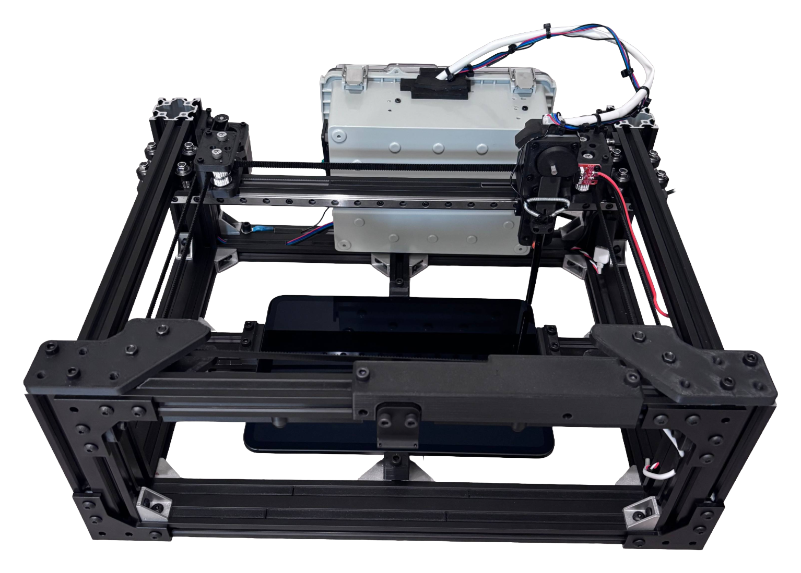
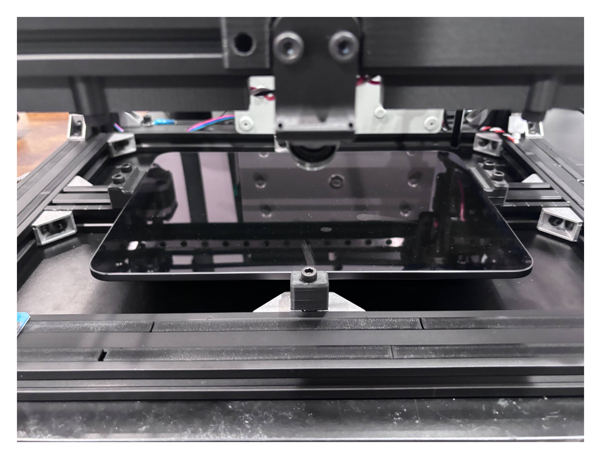
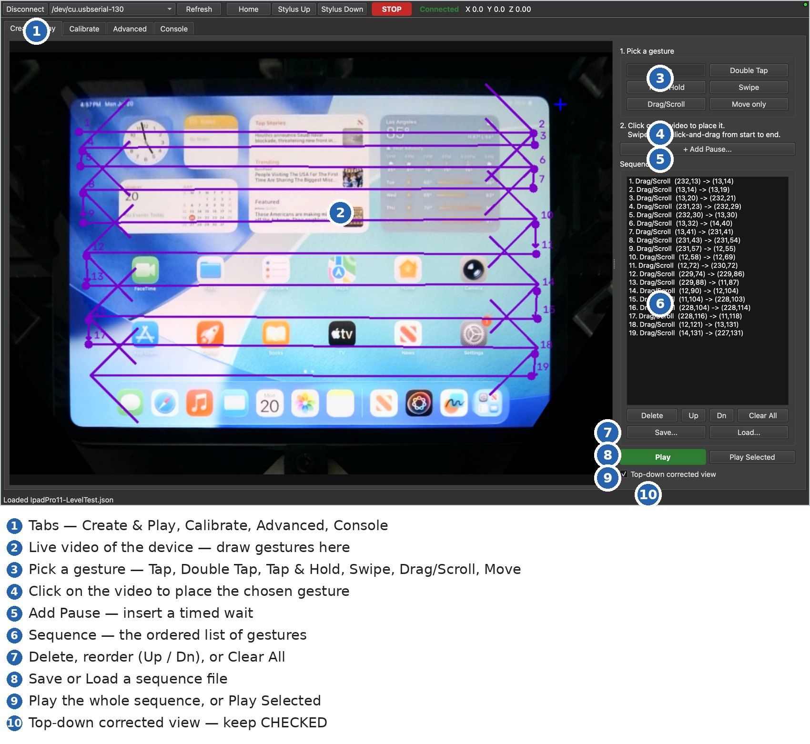
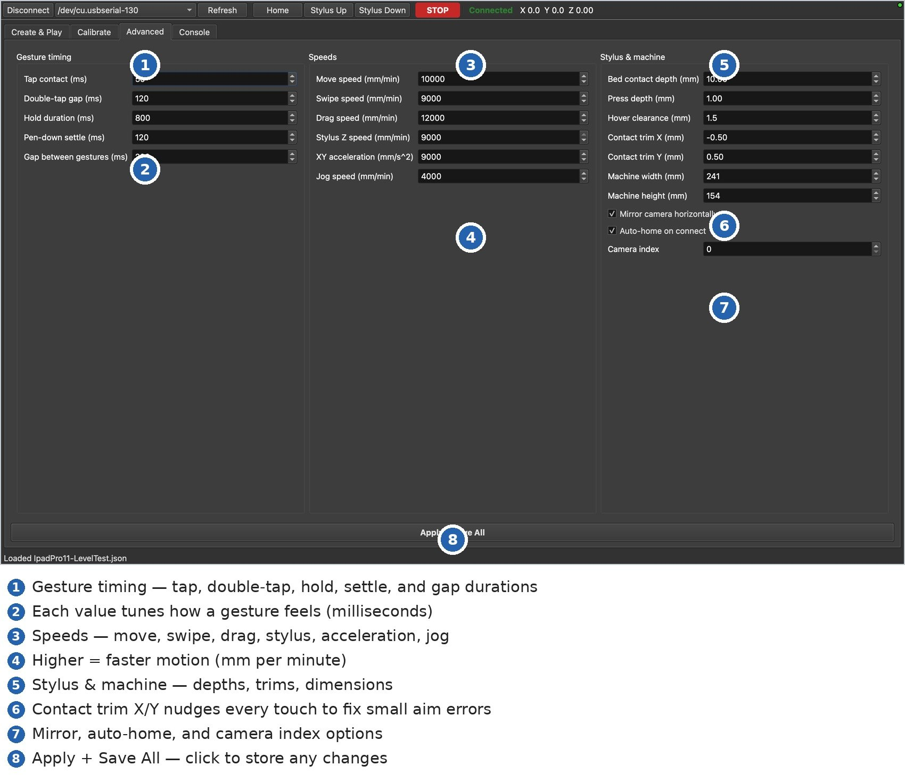
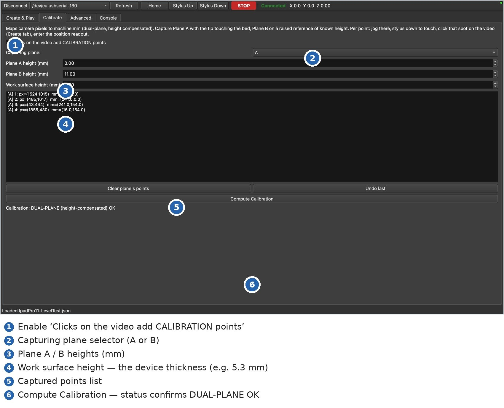
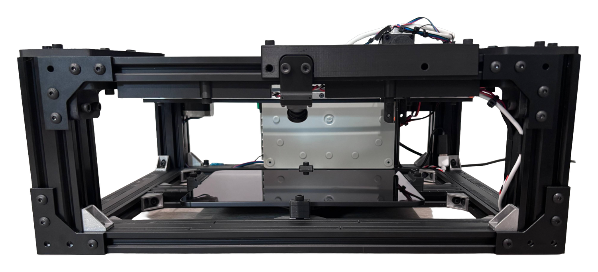
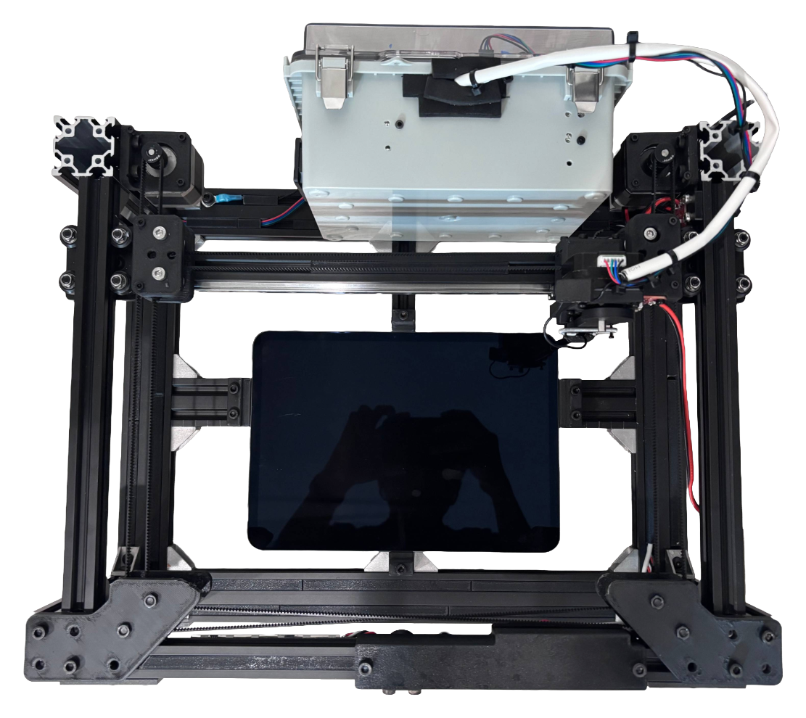
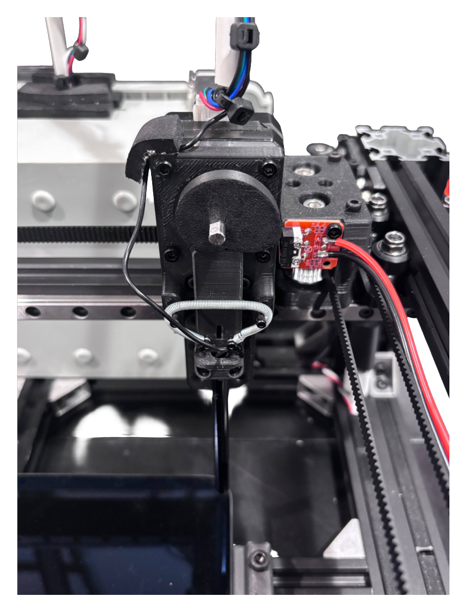

Tactus is a small robot that runs touch tests on a real iPad or phone. You put the device in, draw the taps and swipes you want on a live camera view, and hit play. It does the same thing every time, so you don’t have to sit there doing it by hand.

Simulators can’t tell you how something really behaves on glass. Real touches have momentum when you flick, they get rejected when your palm is down, and timing matters. Tactus uses a moving stylus on the real device, so you’re testing the thing people actually use, not a model of it.
A camera above the device shows you the screen. You draw the sequence on that view, press play, and it repeats the exact same taps and swipes as many times as you need. Handy for repeat testing, long soak tests, demos, or anything where you’d otherwise be poking a screen over and over.

Six kinds of touch, each tuned so the screen registers it properly.
A single touch for buttons, icons, and links. The contact time is set short enough that it doesn’t turn into a long-press.
Two quick taps in the same place. You can adjust the gap between them if the app you’re testing is picky about timing.
A long-press for context menus and drag handles. You set how long it holds.
A flick that’s still moving when it lifts off, so the screen keeps scrolling afterward like a real swipe does.
A slower drag that stops before it lifts, so the screen follows along and then stops instead of coasting.
Moves the stylus over the screen without touching it. Useful for lining up the next step in a longer sequence.
No code. If you can click on a picture, you can set up a test.
Clamp the iPad or phone flat in the middle of the tray and type in how thick it is.
On the live video, click where you want taps or drag to draw swipes. Each one shows up as a numbered step.
It runs through the steps on the real device, the same way each time, for as many rounds as you want.

The main screen — you draw the taps and swipes right on the live camera view.
The main screen stays simple. The extra settings are one tab away when you want them.
If a tap or swipe isn’t registering right, you can change things like contact time, swipe speed, how hard it presses, and small position offsets, then save. Most people never need to touch these, but they’re there.

A one-time calibration lines up the camera with the machine, and it accounts for device thickness, so where you click on the video is where the stylus actually goes.




Install the app and you’re ready to go.
Latest version v2.15
Download the installer, open it, and drag Tactus into your Applications folder.
⇩ Download Tactus (.dmg)macOS 11 (Big Sur) or later · Apple Silicon & Intel
Because Tactus is from an independent developer, the first time you open it macOS may show a security prompt. Right-click (or Control-click) the Tactus app → Open → Open. You only do this once.
Most Macs won’t need this
Open Tactus, plug in the machine, and check the port dropdown. If you see cu.usbserial-130, you’re all set — skip this.
If the list is empty and the machine won’t connect, your Mac is missing the driver for the board’s CH340 USB chip. Install the free official one from WCH (the company that makes the chip), then reopen Tactus.
⇩ Official CH34x Mac DriverTrusted source: WCH (Nanjing Qinheng Microelectronics)
Standard install: unzip the download, open the .pkg (or the .dmg on Apple Silicon), and follow the prompts. If macOS blocks it, go to System Settings → Privacy & Security and click Allow Anyway, then re-open. On macOS 11+, open CH34xVCPDriver from Launchpad and click Install. Restart if asked.
Homebrew (advanced):
brew install --cask wch-ch34x-usb-serial-driverAfter installing, the machine appears as cu.usbserial-130 in Tactus.
Covers setup, running tests, fixing problems, and upkeep.